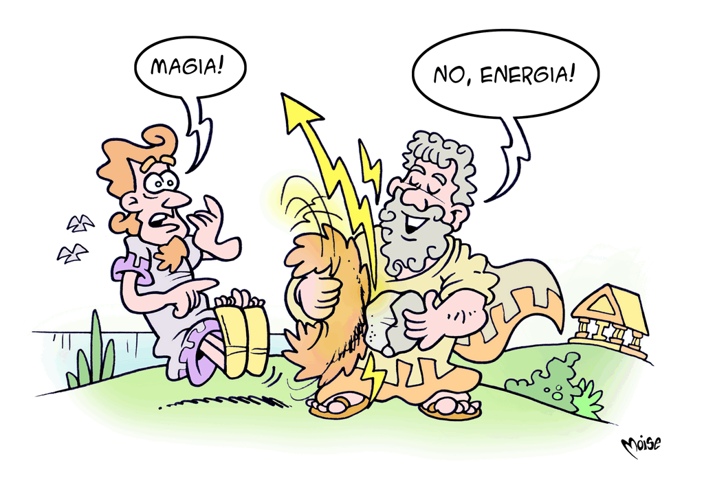

Energia elettrica
L'elettricità è il complesso dei fenomeni prodotti dalle cariche elettriche dei protoni (positive) e degli elettroni (negative), particelle che compongono gli atomi. Le cariche si respingono quando hanno lo stesso segno e si attraggono quando hanno un segno diverso. La natura è governata da forze elettriche che tengono unita la materia. Il nostro cuore, il nostro cervello, il nostro sistema nervoso funzionano grazie ad impulsi elettrici e all'elaborazione di segnali elettrici.
La parola elettricità deriva dal greco [...], che significa ambra: i popoli antichi si erano accorti che strofinando con una pelliccia un pezzo d' ambra (una resina fossile), questo materiale poteva attrarre oggetti leggeri, quali piume o fili. Infatti, il modo più semplice per “elettrizzare” un oggetto è strofinarlo con un altro: così facendo avviene un passaggio di elettroni da un corpo ad un altro e si genera elettricità statica.
Ma come si produce l’energia elettrica che utilizziamo?
La corrente elettrica è un flusso di cariche attraverso un circuito chiuso che può generare effetti magnetici, termici, luminosi, meccanici, chimici, con applicazioni pratiche importantissime nella nostra vita quotidiana.
Un generatore inserito nel circuito fornisce alle cariche l'energia necessaria per muoversi. Si ottiene facendo ruotare una calamita in mezzo ad un avvolgimento di filo metallico: il campo magnetico prodotto dalla calamita ruotando “sposta” delle cariche e genera nell'avvolgimento la corrente elettrica.
Le macchine che svolgono questa funzione sono chiamate “dinamo”, se producono corrente continua (come quella che scorre nel circuito di una pila: il flusso è costante e a “senso unico”), o “alternatori”, se producono corrente alternata (come quella distribuita dalla rete elettrica: il flusso si inverte periodicamente). Una dinamo di uso comune è quella che alimenta il fanale di alcune biciclette: in questo caso il magnete viene fatto girare dalla ruota e azionato dalla persona che pedala.
Naturalmente per la produzione di grandi quantità di corrente elettrica vengono costruiti alternatori di dimensioni molto grandi, azionati da turbine, che funzionano grazie all'azione di magneti artificiali ottenuti facendo passare la corrente attorno a dei nuclei di ferro.
L'elettricità è utilizzata come forma di energia o come mezzo per generare dati e trasmetterli a distanza. Grazie ai suoi effetti (termico, meccanico e luminoso), l'energia elettrica permette di ottenere in qualsiasi momento calore, luce o lavoro meccanico e i segnali elettrici consentono di generare, trasmettere, memorizzare, visualizzare informazioni. Ciò ha portato nel tempo ad una serie di innovazioni: il telegrafo, il telefono, la radio, la televisione, il computer, il cellulare, internet…
Cosa altro ci attende?
